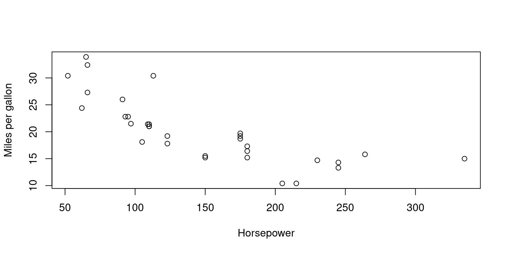

data(mtcars)
dim(mtcars)[1] 32 11
This chapter is incomplete, work-in-progress.
Here’s how you can explore the mtcars data frame:
View the data: Use the head() or tail() function to view the first or last few rows of the data frame, respectively. For example:
data(mtcars)
dim(mtcars)[1] 32 11names(mtcars) [1] "mpg" "cyl" "disp" "hp" "drat" "wt" "qsec" "vs" "am" "gear"
[11] "carb"to display the structure of the dataframe, including the data type and the first few rows.
str(mtcars)'data.frame': 32 obs. of 11 variables:
$ mpg : num 21 21 22.8 21.4 18.7 18.1 14.3 24.4 22.8 19.2 ...
$ cyl : num 6 6 4 6 8 6 8 4 4 6 ...
$ disp: num 160 160 108 258 360 ...
$ hp : num 110 110 93 110 175 105 245 62 95 123 ...
$ drat: num 3.9 3.9 3.85 3.08 3.15 2.76 3.21 3.69 3.92 3.92 ...
$ wt : num 2.62 2.88 2.32 3.21 3.44 ...
$ qsec: num 16.5 17 18.6 19.4 17 ...
$ vs : num 0 0 1 1 0 1 0 1 1 1 ...
$ am : num 1 1 1 0 0 0 0 0 0 0 ...
$ gear: num 4 4 4 3 3 3 3 4 4 4 ...
$ carb: num 4 4 1 1 2 1 4 2 2 4 ...to view the first few rows of the dataframe.
head(mtcars) mpg cyl disp hp drat wt qsec vs am gear carb
Mazda RX4 21.0 6 160 110 3.90 2.620 16.46 0 1 4 4
Mazda RX4 Wag 21.0 6 160 110 3.90 2.875 17.02 0 1 4 4
Datsun 710 22.8 4 108 93 3.85 2.320 18.61 1 1 4 1
Hornet 4 Drive 21.4 6 258 110 3.08 3.215 19.44 1 0 3 1
Hornet Sportabout 18.7 8 360 175 3.15 3.440 17.02 0 0 3 2
Valiant 18.1 6 225 105 2.76 3.460 20.22 1 0 3 1to view the last few rows of the dataframe.
tail(mtcars) mpg cyl disp hp drat wt qsec vs am gear carb
Porsche 914-2 26.0 4 120.3 91 4.43 2.140 16.7 0 1 5 2
Lotus Europa 30.4 4 95.1 113 3.77 1.513 16.9 1 1 5 2
Ford Pantera L 15.8 8 351.0 264 4.22 3.170 14.5 0 1 5 4
Ferrari Dino 19.7 6 145.0 175 3.62 2.770 15.5 0 1 5 6
Maserati Bora 15.0 8 301.0 335 3.54 3.570 14.6 0 1 5 8
Volvo 142E 21.4 4 121.0 109 4.11 2.780 18.6 1 1 4 2to generate summary statistics for each column in the dataframe.
summary(mtcars) mpg cyl disp hp
Min. :10.40 Min. :4.000 Min. : 71.1 Min. : 52.0
1st Qu.:15.43 1st Qu.:4.000 1st Qu.:120.8 1st Qu.: 96.5
Median :19.20 Median :6.000 Median :196.3 Median :123.0
Mean :20.09 Mean :6.188 Mean :230.7 Mean :146.7
3rd Qu.:22.80 3rd Qu.:8.000 3rd Qu.:326.0 3rd Qu.:180.0
Max. :33.90 Max. :8.000 Max. :472.0 Max. :335.0
drat wt qsec vs
Min. :2.760 Min. :1.513 Min. :14.50 Min. :0.0000
1st Qu.:3.080 1st Qu.:2.581 1st Qu.:16.89 1st Qu.:0.0000
Median :3.695 Median :3.325 Median :17.71 Median :0.0000
Mean :3.597 Mean :3.217 Mean :17.85 Mean :0.4375
3rd Qu.:3.920 3rd Qu.:3.610 3rd Qu.:18.90 3rd Qu.:1.0000
Max. :4.930 Max. :5.424 Max. :22.90 Max. :1.0000
am gear carb
Min. :0.0000 Min. :3.000 Min. :1.000
1st Qu.:0.0000 1st Qu.:3.000 1st Qu.:2.000
Median :0.0000 Median :4.000 Median :2.000
Mean :0.4062 Mean :3.688 Mean :2.812
3rd Qu.:1.0000 3rd Qu.:4.000 3rd Qu.:4.000
Max. :1.0000 Max. :5.000 Max. :8.000 to generate a frequency table for a categorical variable.
table(mtcars$cyl)
4 6 8
11 7 14 to find unique values in a column of the dataframe.
unique(mtcars$cyl)[1] 6 4 8Here are some examples of logical operations functions in R using the mtcars dataset:
The logical expression [] and square bracket notation can be used to subset the mtcars dataset according to a criterion. For instance, to only choose the rows where the mpg is higher than 20:
# Subset mtcars based on mpg > 20
mtcars_subset <- mtcars[mtcars$mpg > 20, ]
mtcars_subset mpg cyl disp hp drat wt qsec vs am gear carb
Mazda RX4 21.0 6 160.0 110 3.90 2.620 16.46 0 1 4 4
Mazda RX4 Wag 21.0 6 160.0 110 3.90 2.875 17.02 0 1 4 4
Datsun 710 22.8 4 108.0 93 3.85 2.320 18.61 1 1 4 1
Hornet 4 Drive 21.4 6 258.0 110 3.08 3.215 19.44 1 0 3 1
Merc 240D 24.4 4 146.7 62 3.69 3.190 20.00 1 0 4 2
Merc 230 22.8 4 140.8 95 3.92 3.150 22.90 1 0 4 2
Fiat 128 32.4 4 78.7 66 4.08 2.200 19.47 1 1 4 1
Honda Civic 30.4 4 75.7 52 4.93 1.615 18.52 1 1 4 2
Toyota Corolla 33.9 4 71.1 65 4.22 1.835 19.90 1 1 4 1
Toyota Corona 21.5 4 120.1 97 3.70 2.465 20.01 1 0 3 1
Fiat X1-9 27.3 4 79.0 66 4.08 1.935 18.90 1 1 4 1
Porsche 914-2 26.0 4 120.3 91 4.43 2.140 16.70 0 1 5 2
Lotus Europa 30.4 4 95.1 113 3.77 1.513 16.90 1 1 5 2
Volvo 142E 21.4 4 121.0 109 4.11 2.780 18.60 1 1 4 2The which() function returns the indexes of the vector’s members that adhere to a predicate. To determine the indices of the rows where mpg is larger than 20 for instance:
# Find the indices of rows where mpg > 20
indices <- which(mtcars$mpg > 20)
indices [1] 1 2 3 4 8 9 18 19 20 21 26 27 28 32The ifelse() function applies a logical condition to a vector and returns a new vector with values depending on whether the condition is TRUE or FALSE. It is a vectorized version of the if-else statement. For instance, to add a new column called high mpg that shows whether or not the mpg value is more than 20:
# Create a new column "high_mpg" based on mpg > 20
mtcars$high_mpg <- ifelse(mtcars$mpg > 20, "Yes", "No")If every element in a vector satisfies a logical criterion, the all() function returns TRUE; otherwise, it returns FALSE. If at least one element in a vector satisfies a logical criterion, the any() method returns TRUE; otherwise, it returns FALSE. To determine whether every value in the mpg column is larger than 20, for instance:
# Check if all values in mpg column are greater than 20
all(mtcars$mpg > 20)[1] FALSEAnd to check if at least one value in the mpg column is greater than 20:
Check if any value in mpg column is greater than 20
any(mtcars$mpg > 20)[1] TRUEavg_mileage <- function(data) {
mean(data$mpg)
}
# Usage
avg_mileage(mtcars) # Returns the average mileage of all cars in the dataset[1] 20.09062plot_horsepower_vs_mpg <- function(data) {
plot(data$hp, data$mpg, xlab = "Horsepower", ylab = "Miles per gallon")
}
# Usage
plot_horsepower_vs_mpg(mtcars) # Plots a scatter plot of horsepower vs. miles per gallon
avg_mileage_by_cyl <- function(data, cyl) {
mean(data$mpg[data$cyl == cyl])
}
# Usage
# Returns the average mileage of cars with 4 cylinders
avg_mileage_by_cyl(mtcars, 4) [1] 26.66364# Returns the average mileage of cars with 6 cylinders
avg_mileage_by_cyl(mtcars, 6) [1] 19.74286avg_hp_by_gear <- function(data, gear) {
mean(data$hp[data$gear == gear])
}
# Returns the average horsepower of cars with 3 gears
avg_hp_by_gear(mtcars, 3) [1] 176.1333# Returns the average horsepower of cars with 4 gears
avg_hp_by_gear(mtcars, 4) [1] 89.5